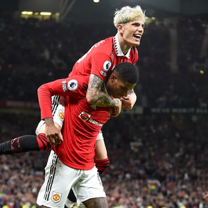
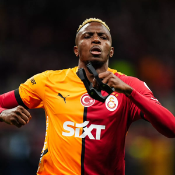
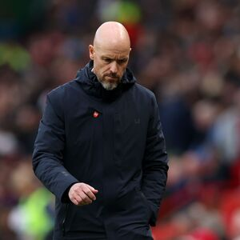
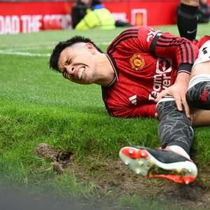
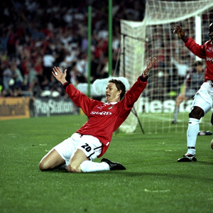
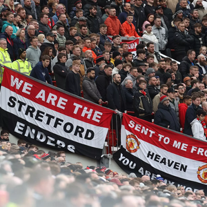

Match Report: United vs. Arsenal
`

Manchester United secured a thrilling 2-1 victory over Chelsea in a
high-intensity Premier League clash at Old Trafford. The game
started with United pressing aggressively, and it didn’t take long
before Bruno Fernandes curled in a stunning free-kick in the 18th
minute to give the Red Devils an early lead. Chelsea responded with
a counter-attack, and Raheem Sterling capitalized on a defensive
lapse to level the score just before halftime.
The second half saw Marcus Rashford and Rasmus Højlund create
several chances, but Chelsea’s defense held firm. The breakthrough
came in the 82nd minute when Casemiro rose highest to head in a Luke
Shaw corner, sending Old Trafford into wild celebrations. Despite
Chelsea’s late surge, André Onana made a crucial save to deny
Christopher Nkunku and ensure all three points stayed in Manchester.
This victory keeps United’s top-four hopes alive, bringing them
level with Tottenham in the Premier League standings. Erik ten Hag
praised the team’s resilience, especially in the closing stages of
the match. With a crucial Champions League fixture ahead, United
will look to carry this momentum forward.
Transfer Watch: Will Victor Osimhen Be the Next Signing?

Manchester United are reportedly in advanced talks with Napoli over
the signing of Victor Osimhen, with the club looking to bolster
their attacking options. Osimhen, who has scored 18 goals in 24
games this season, is seen as the ideal striker to lead United’s
frontline. His pace, strength, and clinical finishing make him one
of the most sought-after forwards in Europe.
According to sources close to the club, negotiations are progressing
well, with a potential transfer fee of £100 million being discussed.
United face competition from Chelsea and PSG, but the player is
reportedly keen on a move to the Premier League. Erik ten Hag has
identified Osimhen as a long-term solution to United’s struggles in
front of goal, particularly after Højlund’s inconsistent
performances.
If the deal goes through, Osimhen would bring a new dimension to
United’s attack, forming a lethal partnership with Rashford and
Fernandes. Fans are excited about the prospect of signing a proven
goal-scorer, but with Napoli holding firm on their asking price, the
next few weeks will be crucial in determining whether this
blockbuster move happens.
Tactical Analysis: Erik ten Hag’s Game Plan

Erik ten Hag has transformed Manchester United’s playing style,
introducing a high-pressing, possession-based system that demands
tactical intelligence from his players. His preference for a 4-2-3-1
formation allows United to control the midfield while ensuring
defensive stability. Bruno Fernandes plays a pivotal role in this
setup, acting as the link between midfield and attack.
One of Ten Hag’s biggest tactical strengths is his ability to adapt
mid-game. Against pressing teams like Liverpool and Arsenal, he has
used inverted full-backs, allowing more fluidity in buildup play.
Additionally, the Casemiro-Mainoo midfield pivot has added defensive
balance, allowing more freedom for attacking players. However,
injuries have occasionally forced changes, affecting consistency in
execution.
While United’s pressing game has improved, defensive transitions
remain a concern. The team has struggled against quick
counter-attacks, often leaving gaps in behind. To compete with the
top clubs, Ten Hag must fine-tune United’s defensive discipline
while maintaining the attacking intensity that has become a
trademark of his system.
Injury Report: When Will Lisandro Martínez Return?

Manchester United fans have been eagerly awaiting the return of
Lisandro Martínez, who has been out since December with a knee
ligament injury. The Argentine defender has been a key figure in
United’s backline, providing aggression, leadership, and composure
in possession. His absence has been felt, particularly with Harry
Maguire and Victor Lindelöf struggling for consistency.
Martínez has now returned to light training, with United’s medical
team monitoring his progress closely. While initial reports
suggested he could be back by early March, Ten Hag has hinted at a
cautious approach to avoid any setbacks. The upcoming clash against
Manchester City might come too soon, but there is optimism that he
could feature in the second leg of the Champions League Round of 16.
United’s defensive record has dipped without Martínez, and his
return could provide a much-needed boost. His partnership with
Raphaël Varane was one of the key reasons behind United’s strong
defensive performances last season. If he regains full fitness in
time for the crucial run-in, it could significantly impact United’s
push for a top-four finish.
Legends’ Corner: Best United Goals of All Time

Manchester United’s history is filled with iconic goals, moments
that have defined generations of fans. One of the most memorable
strikes came in 1999, when Ole Gunnar Solskjaer’s last-minute winner
sealed a historic treble for United in the Champions League final
against Bayern Munich. That goal epitomized the never-say-die spirit
of Sir Alex Ferguson’s side.
Another legendary goal belongs to Wayne Rooney, whose bicycle kick
against Manchester City in 2011 is widely regarded as one of the
greatest Premier League goals of all time. With the game tied at
1-1, Nani’s cross found Rooney, who executed a stunning overhead
kick that left Joe Hart helpless. That goal secured a crucial win in
the title race and remains one of the most replayed goals in
United’s history.
More recently, Cristiano Ronaldo’s thunderbolt against Porto in the
Champions League showcased his incredible ability to score from
distance. The 40-yard strike remains one of the most powerful goals
ever seen in European competition. As new stars emerge at Old
Trafford, the tradition of scoring breathtaking goals continues to
thrive.
Fan Reactions: What Supporters Think About United’s Season

The 2024/25 season has been a rollercoaster ride for Manchester
United fans, with moments of brilliance mixed with frustrating
inconsistency. Many supporters have praised Erik ten Hag’s tactical
improvements, particularly in midfield control and attacking
patterns. However, defensive frailties and lapses in concentration
have left fans questioning whether United can realistically
challenge for the title.
On social media, fans are divided on certain players. Some believe
that Bruno Fernandes has been the standout performer, carrying the
team in crucial games. Others argue that Rasmus Højlund needs more
time to develop, while some are calling for a more clinical striker
like Victor Osimhen to be signed. The debate over Maguire’s role in
the squad also remains heated, with fans split on his performances.
Despite the mixed emotions, the passion among United fans remains as
strong as ever. Whether celebrating victories or voicing frustration
after defeats, the global fanbase continues to back the team. With
the second half of the season still ahead, there is cautious
optimism that United can secure Champions League qualification and
potentially lift a domestic trophy.